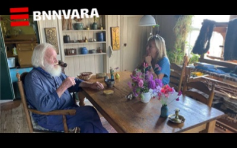
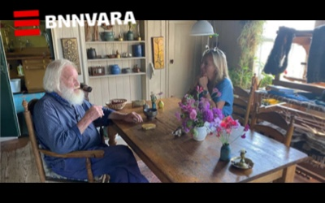

De Vuurtoren Rond
Door Jasper Hauser en Loek Buter
‘It Toarntsje‘, de Vuurtoren van het Friese Workum, staat boven op de Hylperdyk uitkijkend over het IJsselmeer. Rond de vuurtoren bouwden Reid en Cornelie hun eigen zelfvoorzienende biotoop, een wereld waarin alles draait om de relatie tussen mens, dier en de natuur.
'It Toarntsje', the Lighthouse of the Frisian Workum, stands on top of the Hylperdyk overlooking the IJsselmeer. Reid and Cornelie built their own self-sufficient biotope around the lighthouse, a world in which everything revolves around the relationship between humans, animals and nature.
Ter nagedachtenis aan Reid de Jong († 2020)


Is het mogelijk om samen te leven met de natuur? Anno nu lijkt een zelfvoorzienend bestaan een echo uit een ver verleden, maar in Workum is deze kennis nog niet verloren gegaan.
Met een zeis maakten Reid en Cornelie de landjes rondom de voortoren vrij van riet. Ze plantten bomen voor luwte, groeven greppels voor afwatering en legden een moestuin en boomgaard aan. Het verwaarloosde huis herstelden zij in oude luister. Ze haalden geiten voor de melk en schapen voor de wol en vingen vis in het IJsselmeer. Groenten kwamen uit de eigen moestuin. Water komt uit een eigen bron en elektriciteit wekken ze op met een windmolentje en enkele zonnepanelen, nét genoeg om een paar lampen van te laten branden. ’s Winters stoken ze het huis warm met een houtkachel. En houden ze de bedstee warm met op de houtkachel verwarmde stenen in sokken. In de loop der jaren ontstond zo hun eigen hof van Eden.
Publicaties
In '22 & '23 publiceren wij elk seizoen een nieuw beeldend verhaal, waarin een aankomend seizoen op deze bijzondere plek uitgelicht wordt.
 December 2022 - Tweede editie
Winter rond de Vuurtoren
December 2022 - Tweede editie
Winter rond de Vuurtoren
 Maart 2022 — Eerste editie
Lente rond de Vuurtoren
Maart 2022 — Eerste editie
Lente rond de Vuurtoren
 Aankomende uitgave
Zomer rond de vuurtoren
Aankomende uitgave
Zomer rond de vuurtoren
 Aankomende uitgave
Herft rond de vuurtoren
Aankomende uitgave
Herft rond de vuurtoren
Over De Vuurtoren Rond
Met dit project documenteren wij deze bijzondere zelfvoorzienende manier van leven met als doel om kennis over te dragen. De getoonde foto’s geven een eerste impressie van het rijke leven rondom ‘It Toarntsje’. Doel is om deze website uit te breiden met meer foto’s en tekst en zoveel mogelijk kennis openbaar te maken. Dit project is tot stand gekomen op initiatief van Jasper Hauser in samenwerking met fotograaf Loek Buter. Samen zijn zij op zoek naar nieuwe samenwerkingen om het uit te kunnen breiden met een boek en expositie.

In de media
 de Volkskrant - volkskrant.nl
Rond de Vuurtoren - 11/2021
National Geographic Magazine Nederland - natgeoshop.nl
Autarkie als ambacht - 06/2021

Floortje blijft hier - bnnvara.nl
Op bezoek bij Reid & Cornelie 11/2020
de Volkskrant - volkskrant.nl
Rond de Vuurtoren - 11/2021
National Geographic Magazine Nederland - natgeoshop.nl
Autarkie als ambacht - 06/2021

Floortje blijft hier - bnnvara.nl
Op bezoek bij Reid & Cornelie 11/2020

De Makers
Loek Buter is zilveren camera winnend documentair en portret fotograaf. In zijn fotografie ligt de focus op thema’s als duurzaamheid, natuur, landbouw, en het Hollands landschap. Hij studeerde aan de Fotoacademie in Amsterdam en woont in Noord-Holland. Opdrachtgevers zijn onder meer De Volkskrant, National Geographic, NRC, Provincie Noord-Holland, Het Parool en Trouw.
info@loekbuter.com — +31 (0)6 430 640 82 — @loekbutter
Jasper Hauser is techologie ondernemer en oprichter van onder anderen de foto bewerkings app Darkroom. Is gespecialiseerd in digitaal product design en strategie. Hij studeerde fotografie aan de Fotoacademie in Amsterdam, en grafische vormgeving aan de Hogeschool voor de Kunsten Utrecht. — Jasper is de kleinzoon van † Reid de Jong.